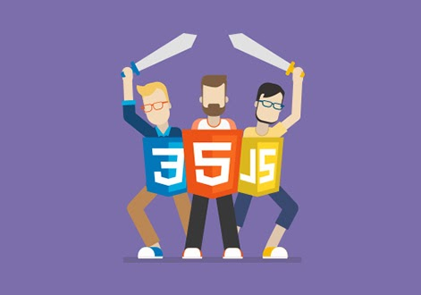

Слово “фронтенд” все частіше можна зустріти не тільки на просторах мережі, але і в бесіді у звичайних дружніх тусовках. Напевно ви неодноразово задавалися питанням про те, хто такий фронтенд-розробник, які його завдання, чим він займається, і що таке фронтенд в принципі. Давайте детально розберемося, що ж означає “фронтенд”, яка його відмінність від “бекенд” і якими навичками необхідно володіти, щоб стати затребуваним фронтенд-розробником.
Frontend – це публічна частина web-додатків (веб-сайтів), з якою користувач може взаємодіяти і контактувати напряму. У Frontend входить відображення функціональних завдань призначеного для користувача інтерфейсу, що виконуються на стороні клієнта, а також обробка запитів користувачів. По суті, фронтенд – це все те, що бачить користувач при відкритті web-сторінки. У свою чергу, web-додаток – клієнт-серверний додаток, в якому клієнтом виступає в основному браузер, сервером – web-сервер. Логіка web-додатку розподілена між сервером і клієнтом, зберігання даних здійснюється переважно на сервері, обмін інформацією відбувається у мережі. Простіше кажучи, це те, що бачить користувач і які дії виконує кожен раз, коли підключається до мережі інтернет і відкриває будь-який браузер
основний тегт заголовку э — < h1 >
Компоненти фронтенд розробки:
Якщо ви маєте творчий підхід до роботи, бажаєте розробляти і створювати динамічні інтерфейси, вам однозначно дорога у фронтенд. Вся фронтенд розробка виконується на стороні користувача, вона не менш важлива ніж бекенд розробка (про неї ми також згадаємо трохи нижче). Основне завдання фронтенд фахівця – це зв’язати представлені дизайнером графічні макети у web-додатку (сторінках сайту) з бекендом і за необхідності реалізувати обчислювальний функціонал на стороні користувача. Основні технології в арсеналі фронтендера це HTML, CSS і JavaScript. Звичайно, при роботі в команді потрібно знати і розбиратися в багатьох процесах, суміжних з роботою фронтенд-розробки . Будучи вже досвідченим фронтенд-розробником потрібно бути знайомим з бекенд-технологіями і розуміти принципи взаємодії користувача і з додатками (UX).
спеціальні символи хтмлОстаннім часом вакансія фронтенд-розробника досить затребувана і актуальна на сайтах з пошуку роботи. У той же час можна зустріти масу вакансій суміжних або схожих за обов’язками з фронтенд-розробниками. Важливо відзначити, що багато хто все ж плутає вакансію фронтенд-розробника з верстальником сайту або дизайнером. В деякій мірі, вивчивши ринок праці складається враження, що фронтенд-розробник – це людина-машина, яка надає цілий спектр послуг, такий собі різноробочий в IT просторі. Деякі роботодавці абсолютно не відрізняють фронтенд-розробника від верстальника, пред’являючи до претендента на вакансію фронтенд-розробника вимоги, що абсолютно не відносяться до його профілю. Роботодавці часто самі не знають, що верстальник – це фактично вузькопрофільний фахівець. Його завдання полягає в верстці макету, отриманого від дизайнера, використовуючи при цьому тільки HTML + CSS, і це лише третина від того, що повинен знати junior frontend розробник. Що ж стосується досвідченого фронтенд девелопера, він не просто “верстає макети”, він відмінно знає JavaScript, орієнтується в фреймворках і бібліотеках, має уявлення і розуміння того, що розміщується на серверній стороні, і нерідко знає додаткові мови, наприклад PHP або C#. Фронтенд-розробник розуміє роботу препроцесорів GULP, LESS, SASS, GRUNT, працює з SVG-об’єктами, DOM, API, AJAX і CORS і так далі. Крім усього іншого є розуміння принципів адаптивної і інтерактивної верстки, UI / UX-проектування, крос-браузерності і крос-платформенності, базового тестування, можливо, також, і знання навичок мобільної розробки. Фронтенд девелопер високого рівня також вміє використовувати графічні редактори, працює з контролем версій Git, GitHub, CVS, з шаблонами різних CMS. Варто відзначити, що дуже важливо також і знання англійської мови на рівні вільного спілкування з замовниками і читання документації. Щоб стати затребуваним і досвідченим фахівцем в області фронтенда розробки , необхідно освоїти наступні технології:
- React.js,
- jQuery,
- Angular.JS ,
- Redux,
- Backbone.js,
- розуміти принципи побудови сучасних односторінкових додатків (Single Page Application);
- Sass,
- Less,
- Stylus
Також, фронтендер повинен розбиратися і вміти розробляти веб-інтерфейси і веб-додатки, тестувати і масштабувати веб-додатки, читати чужий код з розумінням того, як він працює, володіти навичками soft-skills і бути підготовленим до проходження співбесіди, вміти презентувати себе і свій продукт, мати якісне і “живе” портфоліо. Не варто лякатися усього переліку навичок і знань фронтендщика, адже не обов’язково на проекті будуть використовуватися вони всі, на різних проектах використовуються різні комбінації технологій. Фронтендер завжди може знайти проект, виходячи з наявних вмінь, але головною особливістю фронтенд-розробки і програмування в цілому є якраз постійне навчання, і поповнення багажу знань і скіллів.